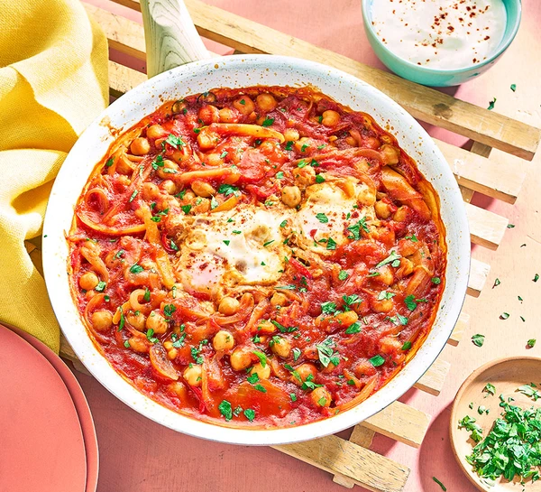

Irish Soda Bread

Description
One-pan eggs and peppers is a delicious and easy-to-make dish where eggs are cooked together with sautéed bell peppers, onions, and often garlic in a single pan. The dish typically involves cooking the peppers and onions until they are soft and slightly caramelized, then cracking eggs directly into the pan over the pepper mixture.
The eggs are then cooked until the whites are set but the yolks remain runny, creating a flavorful and satisfying meal. It's a versatile dish that can be enjoyed for breakfast, brunch, or even a quick dinner.
Ingredients
- Olive oil
- Onions
- Orange pepper
- Red chilli
- Tomatoes
- Veg bouillon powder
- Oregano
- Smoked paprika
- Chickpeas
- Garlic cloves
- Parsley
Steps
- Heat the oil over a medium heat in a large deep frying pan with a lid. Stir in the onions, then cover and leave to cook for 5 mins. Remove the lid and give the onions a stir – they should have softened and be starting to brown in places. Stir in the pepper and chilli, and cook for 2 mins, then tip in the tomatoes, tomato purée, bouillon, oregano, paprika and chickpeas, along with their liquid. Cover and turn the heat down to a simmer for 15 mins.
- Create two dips in the mixture with a spoon and crack 2 eggs into them. Cover and cook over a low heat for about 5 mins, until just set.
- Meanwhile, stir the yogurt with the garlic in a small bowl and sprinkle with paprika. Serve half the chickpea mixture with the cooked eggs. Serve half the yogurt on the side and sprinkle with half the parsley and a little paprika. Cool and chill the remainder. Will keep covered in the fridge for five days. If you're following our Healthy Diet Plan, save the rest for the following day. Reheat the chickpeas in a small pan with a dash of water, and cook the remaining eggs in it, as above. Sprinkle the remaining parsley and paprika on the yogurt, then serve.